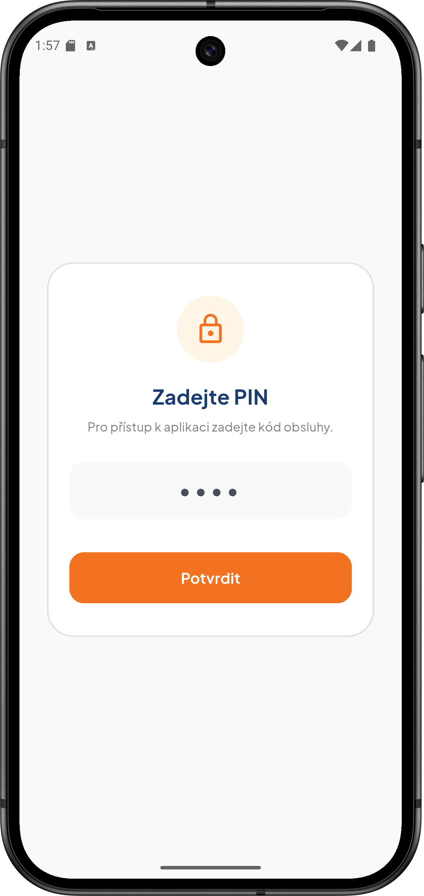
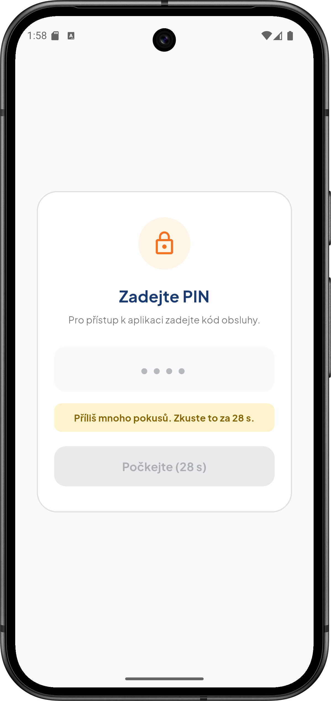
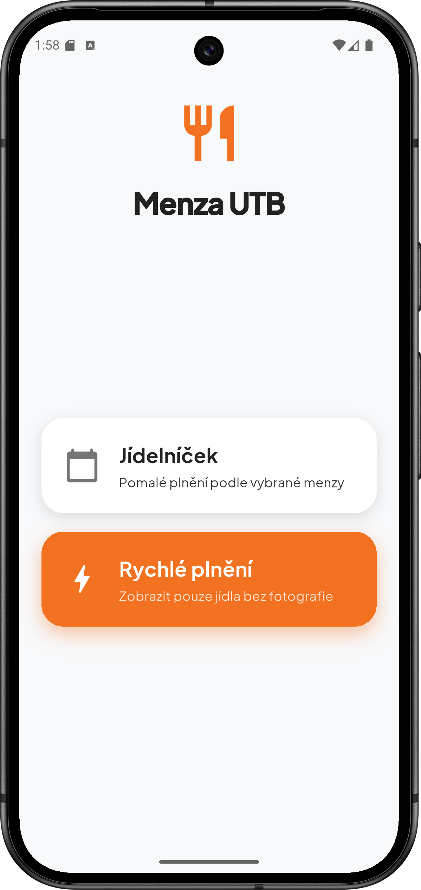
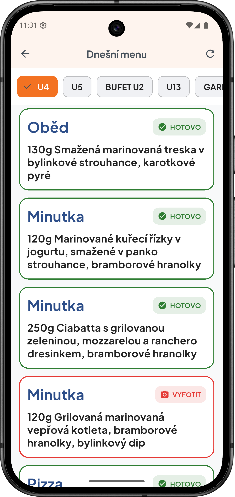
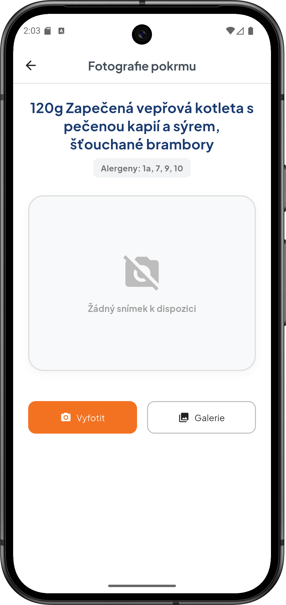
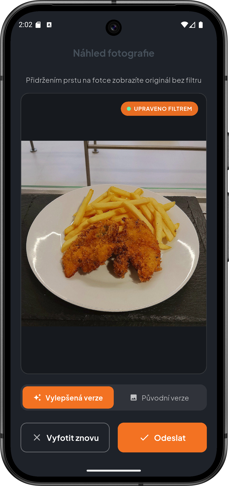

Focení jídel (Mobilní aplikace pro obsluhu)
Mobilní aplikace slouží k rychlému a snadnému pořizování snímků jídel přímo u výdejního pultu. Celý proces je navržen tak, aby nezdržoval personál při výdeji a zabral jen několik sekund, aniž by jakkoliv narušil plynulý provoz kuchyně.
Díky využití multiplatformního frameworku Flutter (jazyk Dart) aplikace funguje spolehlivě na zařízeních se systémem Android i iOS z jedné kódové základny. Pro snadné nasazení stačí nainstalovat distribuční balíček (APK) přímo do telefonu obsluhy bez nutnosti publikování v oficiálních obchodech Google Play nebo App Store.
Autorizace přístupu (PIN Gate)
Při každém spuštění vyžaduje aplikace zadání čtyřmístného přístupového kódu. Ten se ověřuje vůči serverovému API (endpoint /api/mobile/verify_pin). PIN se nastavuje v konfiguračním souboru .env pomocí proměnné MOBILE_APP_PIN.
Ochrana proti hádání kódu (brute-force): Pokud pětkrát za sebou zadáte nesprávný kód, aplikace se z bezpečnostních důvodů na 30 sekund zablokuje. Během této doby nelze odesílat další pokusy o přihlášení a na obrazovce se zobrazuje odpočet zbývajícího času. Po uplynutí tohoto intervalu se počítadlo pokusů vynuluje a pole pro zadání PINu se opět zpřístupní.


Hlavní rozhraní (Dashboard) a režimy plnění databáze
Po úspěšném přihlášení se otevře hlavní obrazovka (Dashboard) se dvěma režimy pro pořizování fotografií. Volba režimu závisí na tom, jaký způsob práce obsluze více vyhovuje.
- Denní jídelníček (výběrový režim): Obsluha si zvolí konkrétní menzu (např. U4, U5, U13) a uvidí její kompletní nabídku pro daný den. Každé jídlo má barevný štítek s aktuálním stavem:
- VYFOTIT – jídlo ještě nemá v databázi přiřazenou fotografii
- HOTOVO – fotografie byla úspěšně odeslána na server
- K NAHRÁNÍ – fotografie čeká v lokální frontě na odeslání
- Rychlé plnění (postupný režim): Režim navržený pro maximální rychlost práce. Aplikace spojí jídelníčky ze všech menz a ukáže pouze jídla, která ještě nemají fotku. Obsluha nemusí přepínat mezi jídelnami, ale fotí jedno jídlo za druhým ze společného seznamu. Po odeslání fotky se automaticky přejde na další jídlo v pořadí.


Pořízení a odeslání fotografie
Po rozkliknutí konkrétního jídla se zobrazí jeho detail, seznam obsažených alergenů a pole pro nahrání snímku. Fotku lze pořídit dvěma způsoby:
- Vyfotit – spustí vestavěný fotoaparát pro okamžité pořízení snímku přímo u výdejního pultu.
- Galerie – umožní vybrat dříve pořízenou fotografii z galerie telefonu.
Po pořízení snímku se na pozadí spustí automatická úprava obrázku. Ta běží v samostatném výpočetním vlákně (Dart Isolate), takže aplikace během zpracování vůbec nezamrzá. Úprava obsahuje tyto kroky v přesném pořadí:
- Středový ořez – oříznutí snímku na čtvercový poměr stran 1:1 se zaměřením na střed.
- Zmenšení rozlišení – přeškálování snímku na rozlišení 1200 × 1200 pixelů pro úsporu mobilních dat při přenosu a úložného prostoru na serveru.
- Jasová normalizace (úprava expozice) – automatické doladění jasu, aby fotky nebyly příliš tmavé nebo přesvícené kvůli světelným podmínkám na výdejnách.
- Sytost barev (saturace) – mírné zvýraznění barev, aby jídlo na obrazovkách vypadalo lákavěji.
- Doostření – použití filtru (Unsharp Mask) pro zvýraznění textur a detailů jídla.

Náhled a porovnání verzí (Live Peek)
Na obrazovce s náhledem vidíte upravenou fotku. Podržením prstu na obrázku můžete dočasně zobrazit původní neupravený snímek (Live Peek). Jakmile prst pustíte, ukáže se opět verze s filtry. To umožňuje snadné vizuální porovnání.
Technicky toto přepínání bez prodlevy či probliknutí zajišťuje widget IndexedStack, který drží oba obrázky načtené v paměti současně. Stiskem tlačítka Odeslat se upravená fotka nahraje na server přes HTTP POST jako multipart/form-data.

Offline fronta (Upload Queue)
Na výdejnách může občas vypadnout Wi-Fi připojení. Aplikace proto obsahuje offline frontu, která zaručuje, že žádná vyfocená fotka nezmizí, i když je server momentálně nedostupný.
Pokud se odeslání fotky nepodaří (např. kvůli výpadku sítě), snímek se automaticky uloží do lokální fronty v telefonu. Informace o jídle se uloží do souboru JSON a samotný obrázek se přesune do trvalého adresáře aplikace, takže ho operační systém nesmaže jako dočasný soubor.
Po obnovení připojení nebo při novém spuštění se fronta automaticky odešle na server na pozadí. Po úspěšném nahrání aplikace soubory z paměti telefonu smaže. V seznamu jídel je takové jídlo označeno oranžovým štítkem K NAHRÁNÍ.